Expert pool resurfacing services to restore beauty and functionality.
Pool Resurfacing Services
At Jay Paintworks, we specialize in professional pool resurfacing services that breathe new life into your swimming pool. Over time, pools can suffer from wear and tear, leading to cracks, discoloration, and surface deterioration. Our expert team is dedicated to restoring the beauty and functionality of your pool through high-quality resurfacing techniques.
Our pool resurfacing services include:
Comprehensive Pool Assessment: We begin with a thorough inspection of your pool to identify any issues and determine the best resurfacing approach.
Surface Preparation: Our team meticulously prepares the pool surface by cleaning, repairing cracks, and removing old coatings to ensure optimal adhesion of the new surface.
Resurfacing Options: We offer a variety of resurfacing materials, including plaster, pebble, fibreglass, marbelite, quartz, and tile finishes, allowing you to choose the perfect look for your pool.
Expert Application: Our skilled technicians apply the chosen resurfacing material with precision and care, ensuring a smooth and durable finish.
Final Inspection and Cleanup: After resurfacing, we conduct a final inspection to ensure quality and leave your pool area clean and ready for use.
Trust Jay Paintworks for all your pool resurfacing needs. Contact us today for a free consultation and let us help you transform your pool into a stunning oasis.
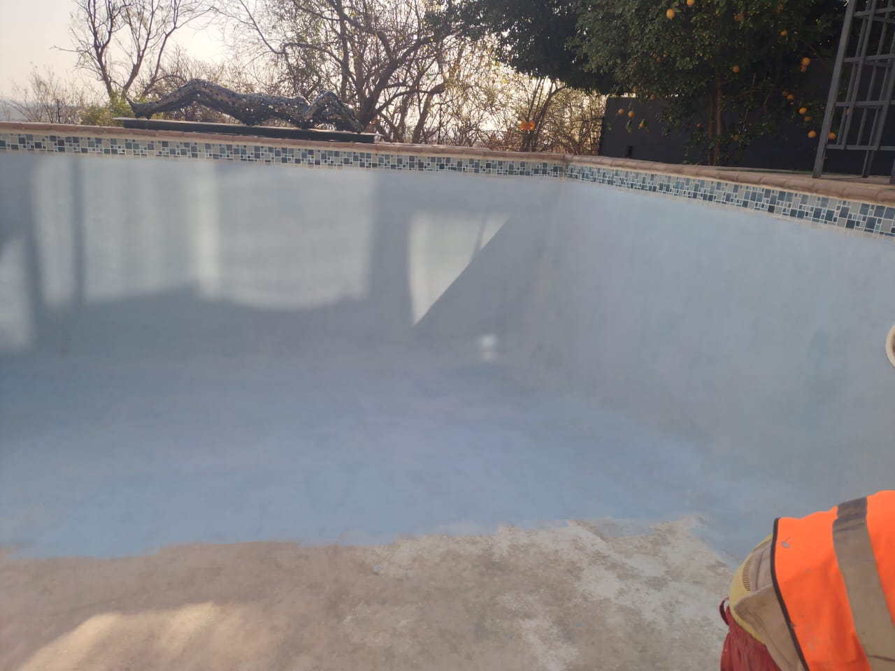
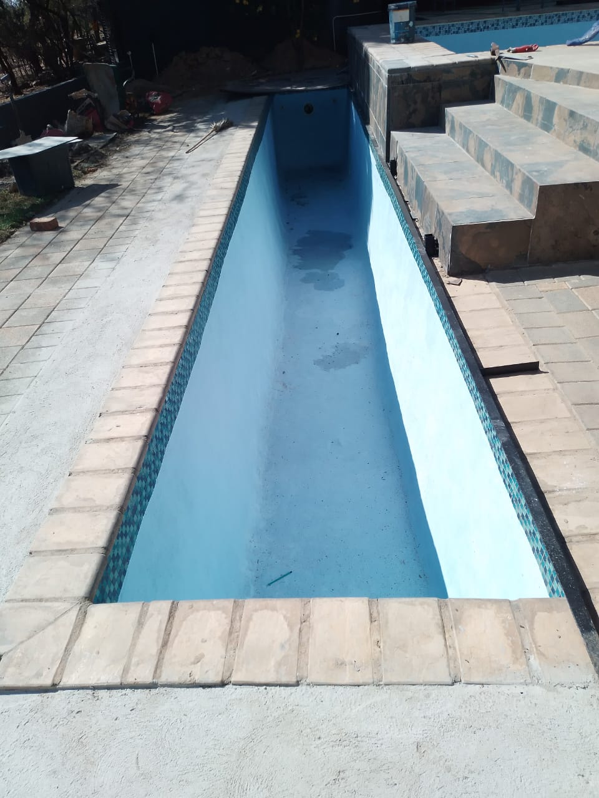
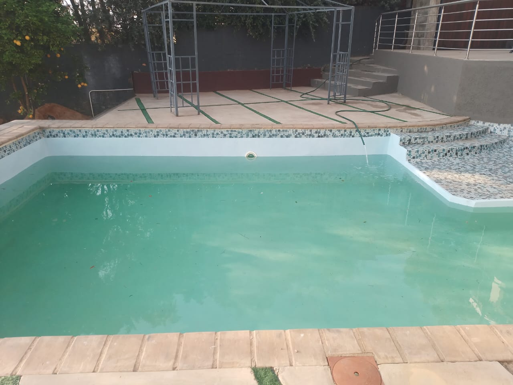
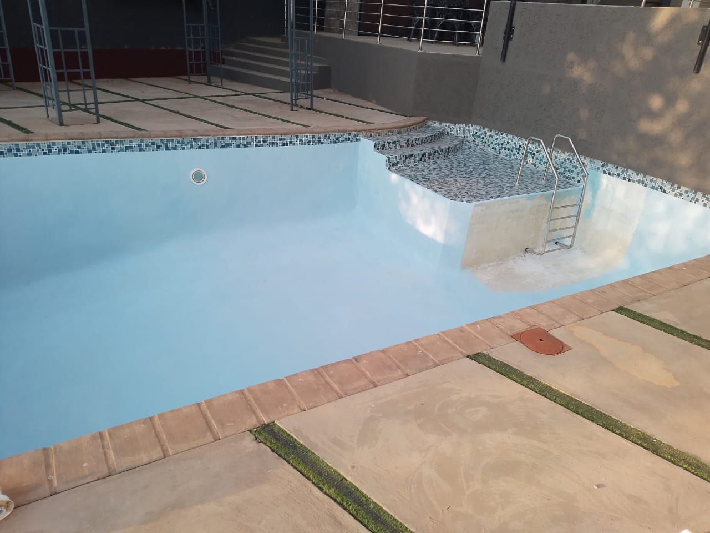
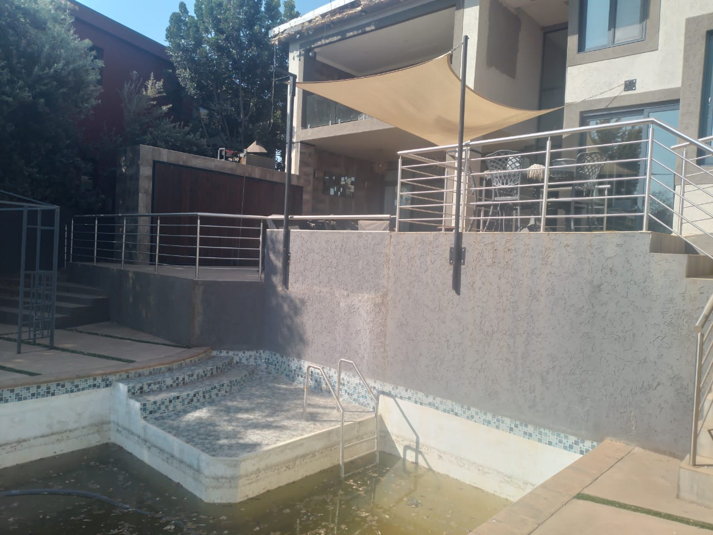
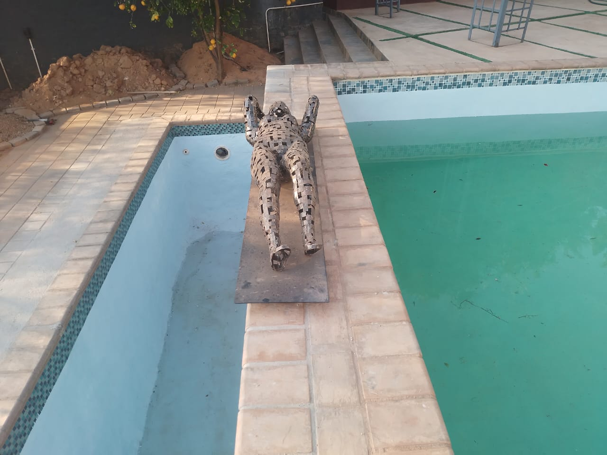
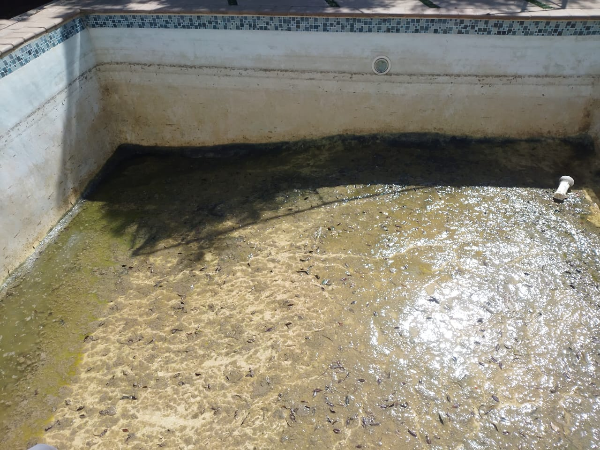
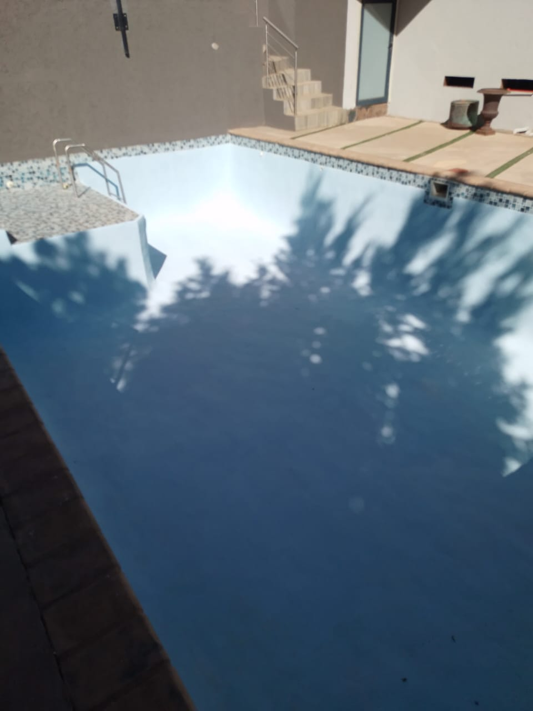
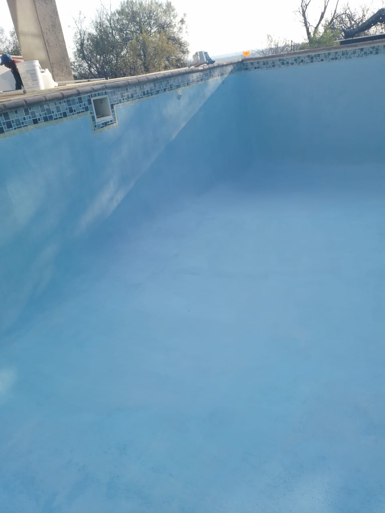
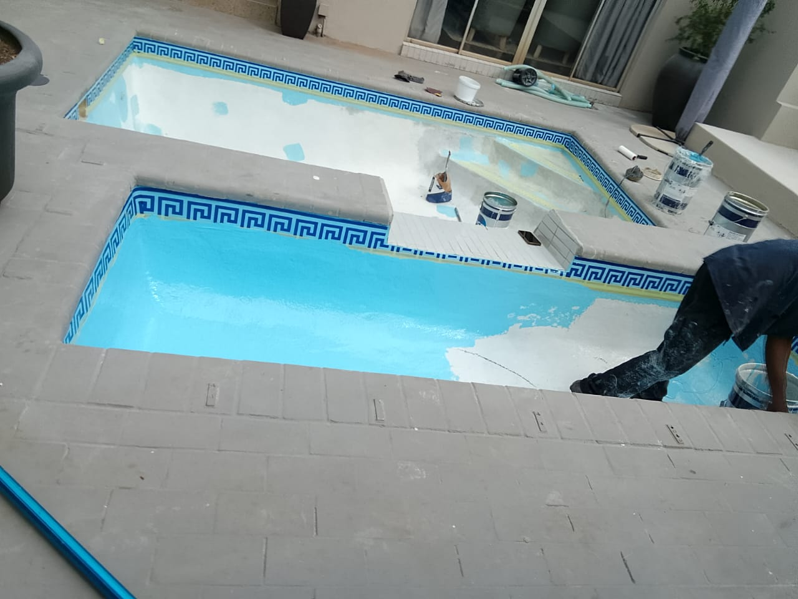
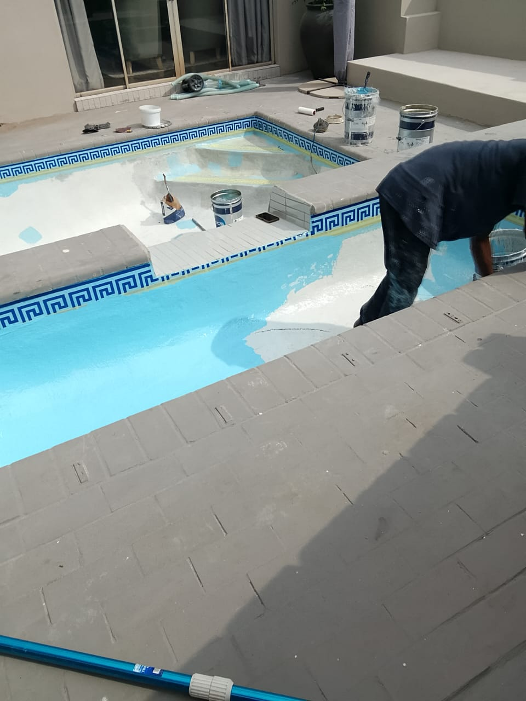
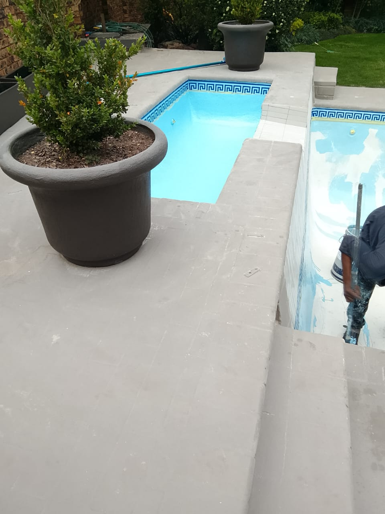
Frequently Asked Questions
What types of paint do you use?
We use high-quality paints from reputable brands to ensure a durable and beautiful finish. The type of paint used depends on the surface and location (interior or exterior).
How long does a typical painting project take?
The duration of a painting project varies based on the size and complexity of the job. We provide an estimated timeline during the consultation phase.
Do you offer free estimates?
Yes, we offer free estimates for all our painting services. Contact us to schedule a consultation.
What areas do you serve?
We serve various locations. Please contact us to find out if we cover your area.
How many coats of paint do I need to change the colour of a wall?
Actual number of coats depends on the quality of paint as well as color shades you're switching to and from but expect atleast two coats to change color, especially when switching between light and dark shades or using vibrant colors. For a significant change, like dark to light, or when using high-pigment colors such as bright red, yellow, or orange, a third coat may be necessary to ensure complete coverage and a uniform finish.
A significant color change requires a second coat to completely cover the old color and prevent it from showing through.
Using a primer before painting can help reduce the number of coats needed, especially when making drastic color changes. Primers create a uniform base that enhances paint adhesion and coverage.